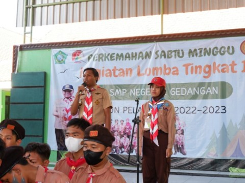
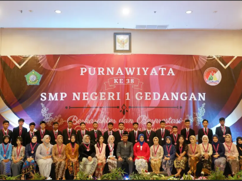
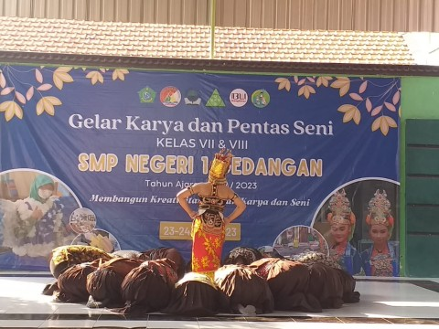
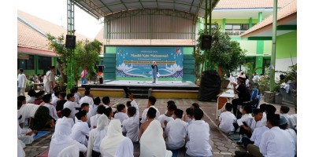
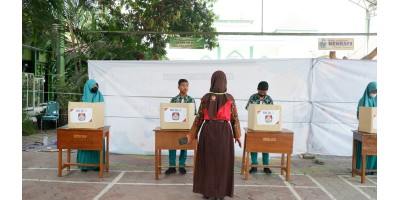
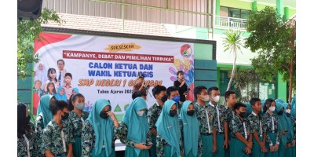
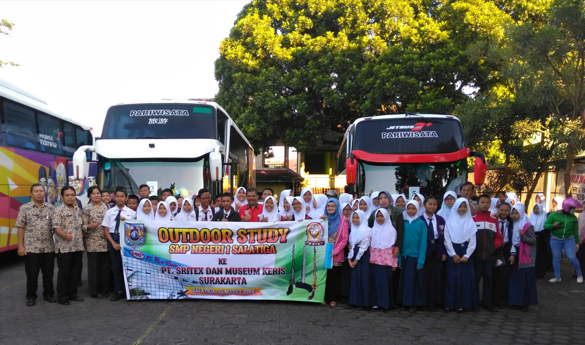

Upacara peringatan Hari Kelahiran Pancasila adalah sebuah acara yang diadakan setiap tahun pada tanggal 1 Juni untuk memperingati kelahiran dan pentingnya Pancasila sebagai dasar negara Republik Indonesia. Pancasila adalah ideologi negara Indonesia
Peserta didik SMPN 1 Gedangan tlah melaksanakan Perkemahan Sabtu Minggu di sekolah dalam rangka Kegiatan Lomba Tingkat 1 yang diikuti seluruh kelas 7 SMPN 1 Gedangan tahun ajaran 2022/2023.
kegiatan purnawiyata angkatan ke 38 Graduation is only a concept. In real life, everyday you graduate. Graduation is a process that goes on until the last day of your life. If you can grasp that, you’ll make a difference. -Arie Pencovici
Kegiatan ini merupakan rangkaian kegiatan akhir tahun yang diselenggarakan untuk memfasilitasi siswa untuk menampilkan karya hasil kegiatan pembelajaran selama satu tahun dan juga merupakan ajang kreatifitas siswa yang dihadiri wali murid.
kegiatan memperingati maulid nabi bertujuan untuk memperkuat kembali kasih kita kepada beliau, dan untuk mengikuti keteladanan serta ajarannya secara utuh.
Pemilihan ketua dan wakil ketua OSIS memiliki tujuan untuk membiasakan demokrasi sejak dini, untuk bertanggung jawab menggunakan hak pilihnya.
Debat pemilihan ketua OSIS biasanya melibatkan seluruh siswa sekolah sebagai audiens. Siswa-siswa dapat mengamati.
Metode ini efektif karena dilakukan di luar ruangan dan siswa secara langsung melakukan kegiatan di sekitar lingkungan.